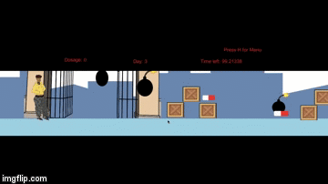

Tools Used: Unity, C#
Everything's fine was a semester long student project dedicated to opening up a dialogue about mental health on Smith College's campus. The protagonist, Chi, is a POC college student who struggles with atychiphobia, the fear of failure. We explore Chi's anxiety in a familiar 2D sidescroll gameplay, but we worked to subvert the idea of "winning" and "speedrunning" through the game for rewards, as one would see in traditional Mario and Sonic games.
I worked as the lead programmer, producing the mechanics, UI, and the dialogue editor for the game. I also worked as the project manager of the team, delegating tasks to writers and technical artist, and scoping the project.
Everything's fine has been featured in Smith College's Collaborations, a major event where students showcase their projects and academic research to professors and students on campus. Our project has also been featured in the Nolen Exhibition, an art exhibition dedicated to showcasing games developed by Smith College students.
We are continuing to work on polishing game mechanics and resolving any bugs that occurred during the playtest.